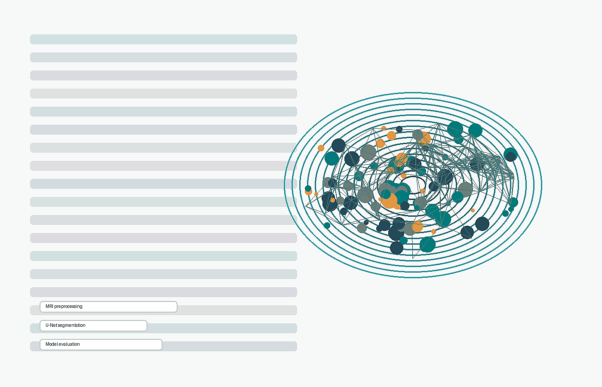
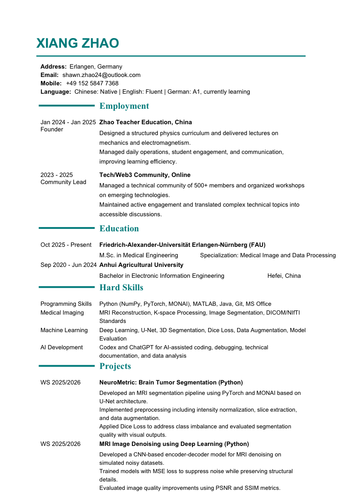

Medical Imaging
MRI reconstruction, K-space processing, image segmentation, DICOM/NIfTI standards.
M.Sc. Medical Engineering | FAU Erlangen-Nurnberg
I am Xiang Zhao, a medical image and data processing student focused on MRI segmentation, denoising, Python workflows, and applied deep learning.

Technical Profile
MRI reconstruction, K-space processing, image segmentation, DICOM/NIfTI standards.
Deep learning, U-Net, 3D segmentation, Dice loss, data augmentation, model evaluation.
Preprocessing pipelines, visualization, PSNR/SSIM evaluation, reproducible reporting.
Codex and ChatGPT for AI-assisted coding, debugging, documentation, and data analysis.
Selected Projects
Role Fit
Image preprocessing, segmentation, denoising, evaluation, and experiment documentation.
Python-based analysis, pipeline support, visualization, reporting, and validation tasks.
AI-assisted development, documentation, workflow support, and cross-team communication.
Curriculum Vitae
Current CV highlights FAU Medical Engineering, MRI image processing, Python, PyTorch, MONAI, machine learning, and AI-assisted development experience.

Contact